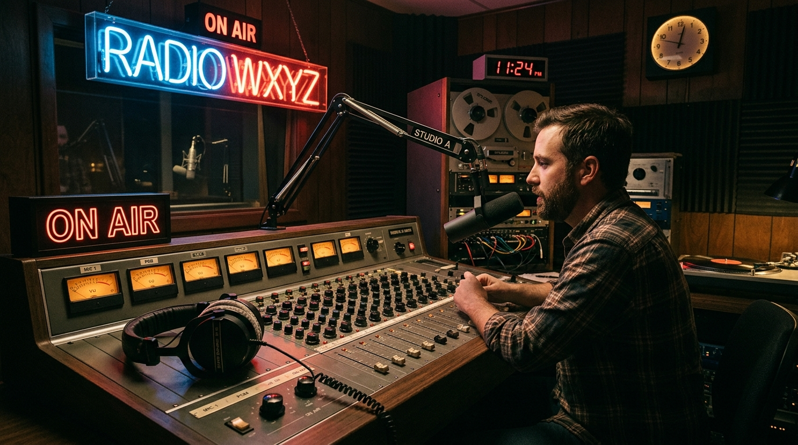

How did free-form college radio become the testing ground for underground electronic synthesis? We explore the historical intersection of late-night frequency modulation, ambient tape loops, and the cybernetic soundscapes that continue to define the cyberpunk subculture.
1. The Roots of Electronic Broadcast
Long before home computers and high-bandwidth streaming platforms, experimental audio designers had to rely on analog transmission methods. Free-form radio stations, operating out of university basements with high-power transmitters, provided the perfect canvas for sonic exploration. Synthesizer builders and early electronic keyboardists would literally bring their massive hardware patch systems directly into the broadcast studio, patching output boards directly into the transmitter boards.
"There was something magical about late-night frequency modulation. You were broadcasting a live analog patch to thousands of listeners driving through the suburbs in the dark. It was the ultimate cybernetic feedback loop." — DJx, Midnight Frequencies Host
This analog transmission created a unique texture. The tape hiss, the subtle radio static, and the natural compression of the FM signal path added a warm, dream-like quality to the cold arpeggiations of the hardware.
2. Embedded Studio Sessions

In the modern WUSB studios (shown in Figure 1), the legacy continues. Modern hosts integrate modular racks, Roland drum machines, and digital audio workstations side-by-side with vinyl turntables and CD decks. This hybrid workflow is the hallmark of modern synthwave and industrial noise genres. DJs can build live beat progressions on-the-fly, layering track selections with synthesized textures.
3. Bridging Retro and Future Sound
As we look to the future, the boundary between listener and broadcaster continues to blur. Modern interactive chatrooms, live-stream playlists, and instant track log spreadsheets (like our browser-generated CSV outputs) let audiences explore the exact tracks played during a show in real-time. Yet, the core experience remains unchanged: a single host, a stack of records or patches, and an open transmission to the world.